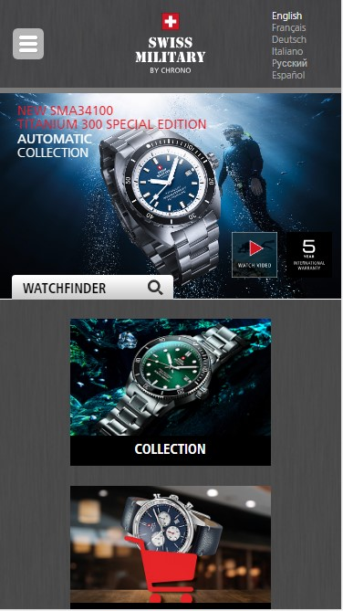

Visual Hierarchy
The Church of Jesus Christ of Latter Day Saints
www.churchofjesuschrist.orgAs you can see in this page, Christ is the focus of the site.
Rule of Thirds
Apple Inc.
www.apple.comAs you can see the black iphone is located in the picture following the rule of Thirds, which is taking only part of the screen and between the 1nd and 3rd columns of the picture.
White Space and Clean Design
Swiss Military Watches
www.swissmilitarytime.ch White spaces don't need to be white, and this is a good example of that.